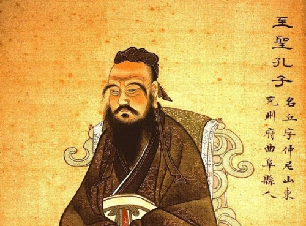

The famorous Chinese teacher, editor, politician, and philosopher
 The Venerated Confucius
Here is a timeline of Confucius' Life
Early life
●
September 28, 551 BC - Born in Zou, Lu state (near present-day Qufu, Shandong Province).His father Kong He (孔紇), also known as Shuliang He (叔梁紇), was an officer in the Lu military. Kong He died when Confucius was three years old, and Confucius was raised by his mother Yan Zhengzai (顏徵在) in poverty. Confucius was born into the class of shi (士), between the aristocracy and the common people.Confucius was educated at schools for commoners, where he studied and learned the Six Arts.
●
532 BC - At age 19 he married his wife, surnamed Qiguan (亓官), and a year later the couple had their first child, Kong Li (孔鯉)[13] who was later known as "Boyu", which means "Top Fish" in Chinese.[14] Qiguan and Confucius would later have two daughters together, one of whom is thought to have died early in her life as a child.
●
532 BC - At age 19 he married his wife, surnamed Qiguan (亓官), and a year later the couple had their first child, Kong Li (孔鯉)[13] who was later known as "Boyu", which means "Top Fish" in Chinese.[14] Qiguan and Confucius would later have two daughters together, one of whom is thought to have died early in her life as a child.
Political career
●
527 BC - He is said to have worked in various government jobs during his early 20s, and also worked as a bookkeeper and a caretaker of sheep and horses, which he used the proceeds from to give his mother a proper burial.[13][14] When his mother died, Confucius (aged 23) is said to have mourned for three years as was the tradition.
●
501 BC - By then, Confucius had built up a considerable reputation through his teachings, while the ruling families at Lu State came to see the value of proper conduct and righteousness, so they could achieve loyalty to a legitimate government. Confucius came to be appointed to the minor position of governor of a town.[19] Eventually, he rose to the position of Minister of Crime.
●
497 BC - Confucius could not achieve the idealistic reforms that he wanted including restoration of the legitimate rule of the duke. He had made powerful enemies within the state, especially with Viscount Ji Huan, due to his successes so far. According to accounts in the Zuo Zhuan and Shiji, Confucius departed his homeland in 497 BC after his support for the failed attempt of dismantling the fortified city walls of the powerful Ji, Meng, and Shu families.[31] He left the state of Lu without resigning, remaining in self-exile and unable to return as long as Viscount Ji Huan was alive.
Exile and Return Home
●
483 BC - After Confucius' resignation, he began a long journey or set of journeys around the small kingdoms of north-east and central China, traditionally including the states of Wei, Song, Chen, and Cai. At the courts of these states, he expounded his political beliefs but did not see them implemented. According to the Zuo Zhuan, Confucius returned home to his native Lu when he was 68 (483 BC), after he was invited to do so by Ji Kangzi, the chief minister of Lu.The Analects depict him spending his last years teaching 72 or 77 disciples and transmitting the old wisdom via a set of texts called the Five Classics. During his return, Confucius sometimes acted as an advisor to several government officials in Lu, including Ji Kangzi, on matters including governance and crime.
●
479 BC - Burdened by the loss of both his son and his favorite disciples, he died at the age of 71 or 72. He died from natural causes. Confucius was buried in Kong Lin cemetery which lies in the historical part of Qufu in the Shandong Province.
Philosophy - Confucianism
●
In the Analects, Confucius presents himself as a "transmitter who invented nothing". He puts the greatest emphasis on the importance of study, and it is the Chinese character for study (學) that opens the text. Far from trying to build a systematic or formalist theory, he wanted his disciples to master and internalize the old classics, so that their deep thought and thorough study would allow them to relate the moral problems of the present to past political events (as recorded in the Annals) or the past expressions of commoners' feelings and noblemen's reflections (as in the poems of the Book of Odes).
Ethics
●
One of the deepest teachings of Confucius may have been the superiority of personal exemplification over explicit rules of behavior. His moral teachings emphasized self-cultivation, emulation of moral exemplars, and the attainment of skilled judgment rather than knowledge of rules. Confucian ethics may be considered a type of virtue ethics. His teachings rarely rely on reasoned argument and ethical ideals and methods are conveyed more indirectly, through allusion, innuendo, and even tautology.
Politics
●
Confucius' political thought is based upon his ethical thought. He argued that the best government is one that rules through "rites" (lǐ) and people's natural morality, and not by using bribery and coercion. He explained that this is one of the most important analects: "If the people be led by laws, and uniformity sought to be given them by punishments, they will try to avoid the punishment, but have no sense of shame. If they be led by virtue, and uniformity sought to be given them by the rules of propriety, they will have the sense of the shame, and moreover will become good." (Translated by James Legge) in the Great Learning (大學). This "sense of shame" is an internalisation of duty, where the punishment precedes the evil action, instead of following it in the form of laws as in Legalism.
●
Confucius looked nostalgically upon earlier days, and urged the Chinese, particularly those with political power, to model themselves on earlier examples. In times of division, chaos, and endless wars between feudal states, he wanted to restore the Mandate of Heaven (天命) that could unify the "world" (天下, "all under Heaven") and bestow peace and prosperity on the people. Confucius believed in ruling by example, if you lead correctly, orders by force or punishment isn't necessary.
●
Confucius did not believe in the concept of "democracy", which is itself an Athenian concept unknown in ancient China, but could be interpreted by Confucius' principles recommending against individuals electing their own political leaders to govern them, or that anyone is capable of self-government. He expressed fears that the masses lacked the intellect to make decisions for themselves, and that, in his view, since not everyone is created equal, not everyone has a right of self-government.
Legacy - Confucius' teachings
●
Two of Confucius' most famous later followers emphasized radically different aspects of his teachings. In the centuries after his death, Mencius (孟子) and Xun Zi (荀子) both composed important teachings elaborating in different ways on the fundamental ideas associated with Confucius
●
Under the succeeding Han Dynasty and Tang dynasty, Confucian ideas gained even more widespread prominence. Under Wudi, the works of Confucius were made the official imperial philosophy and required reading for civil service examinations in 140 BC which was continued nearly unbroken until the end of the 19th Century.Both Confucian ideas and Confucian-trained officials were relied upon in the Ming Dynasty and even the Yuan Dynasty, although Kublai Khan distrusted handing over provincial control to them.
●
In the modern era Confucian movements, such as New Confucianism, still exist but during the Cultural Revolution, Confucianism was frequently attacked by leading figures in the Communist Party of China. This was partially a continuation of the condemnations of Confucianism by intellectuals and activists in the early 20th Century as a cause of the ethnocentric close-mindedness and refusal of the Qing Dynasty to modernize that led to the tragedies that befell China in the 19th Century.
子曰：
生而知之者，上也；
學而知之者，次也；
困而學之，又其次也；
困而不學，民斯為下矣！
By three methods we may learn wisdom: First, by reflection, which is noblest; Second, by imitation, which is easiest; and third by experience, which is the bitterest.
If you have time, you can read more about this incredible human being on his Wikipedia entry